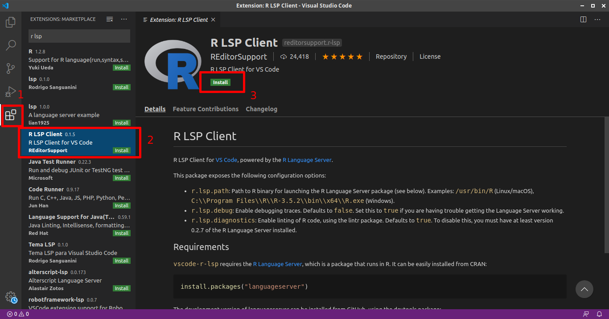
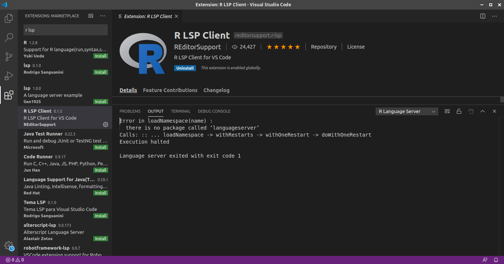
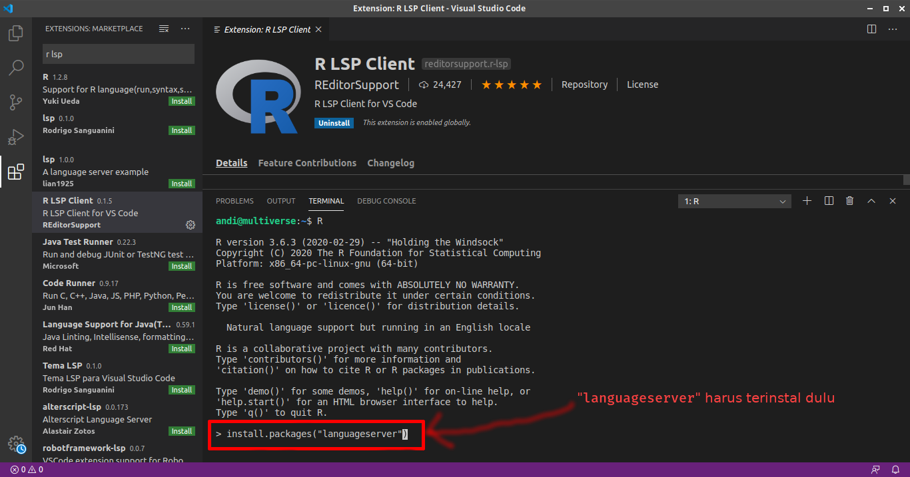
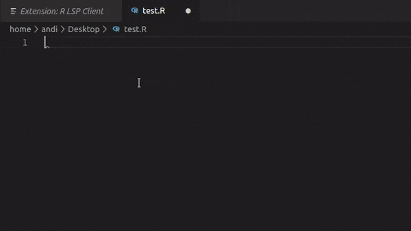

OK! Saya akui saya terlena dengan perbincangan tentang menggunakan editor VS Code dari Microsoft untuk bekerja dengan R, di twitter.
👏VS @code is now an amazing IDE for R
— Jozef Hajnala (@jozefhajnala) December 10, 2019
The latest improvements to the language server protocol implementation for #rstats offer code completion, go to definitions, info on hover and more.
I have not been this excited for new R developments in a while:
🔗https://t.co/hWMoLwOzi1 pic.twitter.com/X8S5xGffPM
Berangkat dari tweet di atas, saya melakukan beberapa langkah instalasi di mesin linux saya untuk bisa ikutan dalam keseruan ini. Berikut…
1. Siapkan VS Code
Saya unduh dan instal VS Code dulu tentunya. Instalasi di linux Ubuntu semudah mengerjakan skripsi: copas ini saja! (ups)
Ganti bagian ~/Downloads/code_x.xx.x-xxxxxx_amd64.deb dengan direktori tempat teman-teman menyimpan berkas deb-nya VS Code.
~$ sudo dpkg -i ~/Downloads/code_x.xx.x-xxxxxx_amd64.deb
Lalu, pergi ke menu, cari Visual Studio Code. Atau di terminal ketikkan code, enter.
2. Cari dan Instal Ekstensi R LSP Client
Cara instal:
- pergi ke bagian extension (nomor 1),
- ketik “r lsp” di pencarian,
- pilih R LSP Client yang dari REditorSupport (nomor 2),
- lalu klik “Install”.

Ketika menginstal ternyata ada pesan error yang muncul:

Ini terjadi karena saya belum instal library languageserver untuk R. Itulah mengapa saya juga harus melakukan…
3. Instal library languageserver
Instalasinya bisa dari terminal linux, console R di terminal, console R di RStudio, atau terminal yang masuk ke console R dari VS Code.
Pilihan terakhir adalah yang saya pilih, biar gak kemana-mana lagi.
Di bagian bawah, ada TERMINAL, ketik R (tentu saja R sudah terinstal), kemudian ketikkan:
install.packages("languageserver")
Tunggu sampai selesai instal, ada beberapa dependensinya juga yang diperlukan. Cas-cis-cus…

Terakhir, tutup dan buka kembali (restart) VS Code, biar afdhol.
Taraaa….
Autocompletion di VS Code untuk bahasa R.

Sekian dulu.